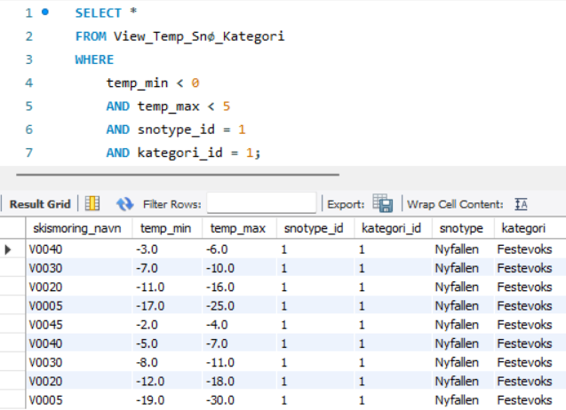

Database · SQL
Ski Wax Database
A MySQL database that helps skiers find an alternative wax when the one they planned to use is sold out, based on temperature, snow type, track conditions and skill level.
- Team 2 students
- Course Database Systems, Østfold University College
- When Spring 2025

How we built it
- Normalise One big table split up step by step to BCNF
- Model ER model in MySQL Workbench
- Implement Forward engineering to a SQL script
- Fill Real wax data from Swix, imported from CSV
- Query Views for the most common searches
The data model
One main table for the waxes, with four lookup tables. Foreign keys with ON UPDATE CASCADE keep the data consistent.
Snow type
New, old, wet or universal snow.
Category
Grip wax, glide wax or klister.
Skill level
Beginner, experienced or racer, and combinations.
Track
Freshly groomed, worn or icy.
Example: finding a wax
A view joins the wax table with its lookup tables, so a search shows names instead of IDs. Here: grip wax for new snow when it is below freezing.
CREATE VIEW View_Temp_Snø_Kategori AS
SELECT
s.navn AS skismoring_navn,
s.temp_min,
s.temp_max,
s.snotype_id,
s.kategori_id,
sn.type AS snotype,
k.navn AS kategori
FROM Skismøring s
JOIN Snøtype sn ON s.snotype_id = sn.snotype_id
JOIN Kategori k ON s.kategori_id = k.kategori_id;
SELECT * FROM View_Temp_Snø_Kategori
WHERE temp_min < 0
AND temp_max < 5
AND snotype_id = 1 -- new snow
AND kategori_id = 1; -- grip wax
Access control
Only users with an admin_role can add or delete waxes and track conditions. Regular users can search and create their own views. We left out DROP on purpose, so users can still delete views they have made.
What I learned
- How normalisation removes duplicate data and makes updates safe
- Views make complex joins easy to reuse
- Realistic test data shows whether a design actually works
- Roles and grants are part of the design, not an afterthought